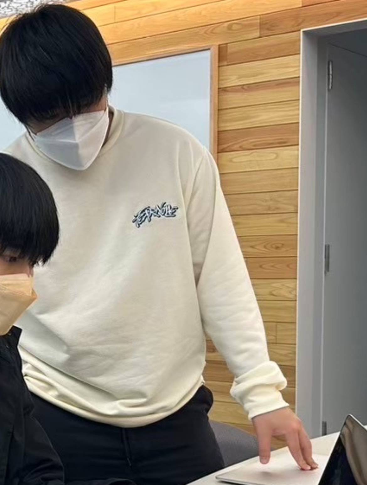
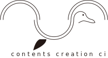

About Me

2004 年 6 月 10 日生まれ高校 3 年で3DCG に出会い CG デザイナーを目指す。
大学では、東京ゲームショウにゲームを出展するなど ゲーム制作に携わる。
Skills

3D モデリングができます。小道具や背景などのモデリングが得意です。ゲームや動画などの映像では、キャラクターだけでは成り立つ事は無く、その周りにある小物、背景、エフェクトなどがあることにより視聴する側の没入感が高くなり、飽きさせません。私はそこに注目し、誰もが楽しめるような CG デザイナーを目指しています。

雰囲気に合ったアイコン、ロゴを作ることができます。アイコンは言わば第一印象です。何かを始める際、一番初めに目にするのがアイコンなので、アイコンはそのもの尾印象を決めるとても大事な部分です。私は、それらの雰囲気に合ったデザインそして意味合いを持たせて制作することができます。見やすく、わかりやすいアイコン制作を心掛けています。
My Projects
3DCG

blenderでトンネルを制作しました。奥行きのあるものを製作するためにトンネルを選びました。こだわったポイントは、中のライトを光らせたことです。
制作期間: 7日

blenderでベランダを制作しました。特にこだわったのは窓を透明にすることと、開閉できる様にしたことです。
制作期間: 3日
Illustrator

コンテンツクリエーションサークル(ccc)のロゴ制作を手掛けました。カモメがモチーフで、CCC で制作されたゲームが自由に羽ばたいて欲しいという意味を込めました。
制作期間: 1日
Contact Me
yuyu0610yuto@gmail.com